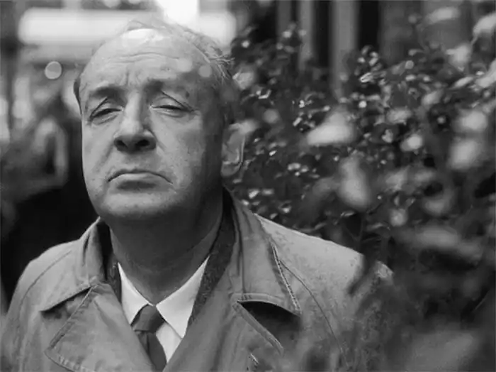
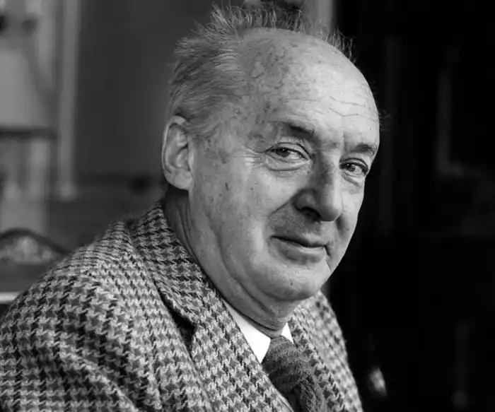
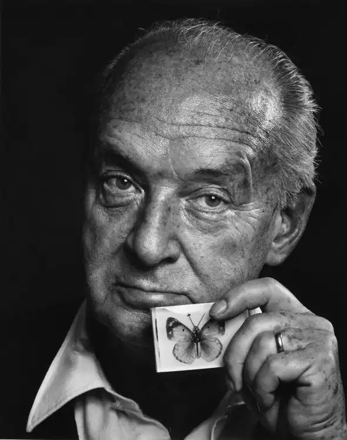
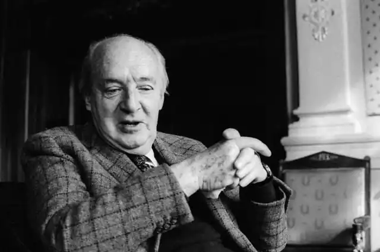
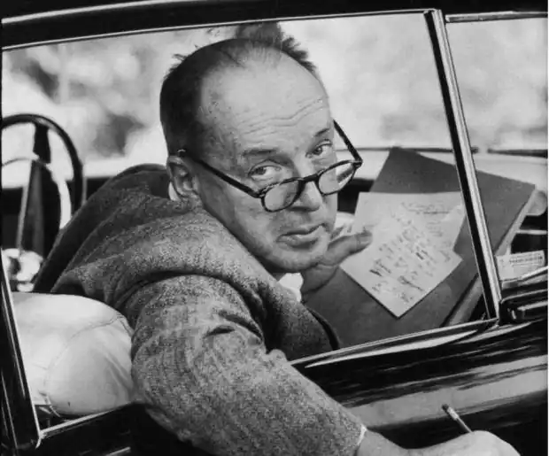

НАБОКОВ, Володимир Володимирович (Набоков, Владимир Владимирович — 23.04.1899, Санкт-Петербург — 12.07. 1977, Лозанна, Швейцарія) — російсько-американський письменник.
Народився у сім'ї вченого і політика, нащадка татарського князя Набока Мурзи, Володимира Дмитровича Набокова, відомого юриста і громадського діяча, одного з лідерів Конституційно-демократичної (кадетської) партії, члена Державної Думи. Батько Набокова був англоманом, тому англійську мову його син вивчив раніше, ніж російську. Велика домашня бібліотека, яка, крім світової класики, уміщувала усі новинки не лише художньої, а й науково-популярної літератури, журнали з ентомології (звідки походить пристрасть Набокова до метеликів), домашні вчителі, шахи, теніс, бокс — сформували коло інтересів і майбутніх тем творчості Набокова. У 1911 — 1916 pp. Набоков навчався в одному із найпрестижніших навчальних закладів Росії — Тенишевському училищі, де почав писати вірші, які видавав коштом батька і які пізніше назвав "банальними любовними віршами". Відразу ж після Жовтневої революції, у листопаді 1917 p., батько переправив родину у Крим, а невдовзі перебрався туди й сам, де увійшов до складу кримського уряду як міністр юстиції.
Як і багато ровесників, Набоков мав намір вступити у Денікінську армію, але більшовицькі війська наступали настільки стрімко, що родина Набокових змушена була евакуюватися. Через Туреччину, Грецію, Францію родина добралася в Англію, де Набоков вступив у Кембриджський університет, вивчав російську та французьку літератури. Паралельно писав статті з ентомології, опублікував есе "Кембридж" (під псевдонімом Володимир Сірін) та цілий ряд віршів у російській і зарубіжній періодиці. 1922 р. в родині Набокових трапилася страшна трагедія: 28 березня трагічно загинув батько Набокова, котрий у залі берлінської філармонії захистив своїм тілом від кулі, випущеної російським монархістом, свого опонента, відомого історика П. Мілюкова. У червні 1922 p., після закінчення Кембриджу, Набоков переїхав у Берлін, де заробляв на прожиток репетиторством (уроки англійської та французької мов, навчання грі в теніс) та публікаціями в емігрантських виданнях. Упродовж 1922— 1923 pp. Набоков багато перекладав відомих європейських поетів: Р. Брука, П. де Ронсара, О'Саллівана, А. Теннісона, В.Б. Єйтса, Дж. Н. Г. Байрона, Дж. Кітса, Ш. Бодлера, В. Шекспіра, А. де Мюссе, А. Рембо, Й.В. Ґете й ін. У періодиці були опубліковані оповідання, п'єси "Смерть" ("Смерть" 1923), "Дідусь" ("Дедушка", 1923), "Трагедія пане Морна" ("Трагедия господина Морна", 1924); вийшли друком поетичні збірки "Гроно" ("Гроздь", 1923) та "Вишній шлях" ("Горный путь", 1923). 15 квітня 1925 p. Набоков одружився із російською єврейкою Вірою Євсеївною Слонім і того ж року видав свій перший роман "Машенька" ("Машенька", 1925). У романі відтворене психологічний стан значної частини тогочасної російської еміграції, що не прийняла радянське влади, але водночас не змогла віднайти себе у чужому середовищі. У цьому "напівавтобіографічному", за авторським означенням, творі ліричною домінантою звучить мотив ностальгії головного героя, котрий повсякчас лине думками на батьківщину, де залишилася його кохана — Машенька, "вся його юність, його Росія Становлення Набокова-прозаїка було пов'язане не лише з традиціями російської класичної літератури, а й із досягненнями західноєвропейського модернізму, особливо у сфері потоку свідомості та реконструкції пам'яті (творчість М. Пруста, Ф. Кафки, Ж. Жіроду). Провідна тема ранньої творчості Набокова — доля, що підпорядковує собі вчинки людини, але яка, своєю чергою, підпорядкована ще більш могутній і загадковій силі — містицизму. Майже в усіх набоковських романах 20-х — середини 30-х pp. ця тема поєднується з роздумами про сенс життя та проблеми емігрантського існування. У 20—30-х pp. Набоков видав друком романи "Король, дама, валет" ("Король, дама, валет", 1928), у якому змальований любовний трикутник і де письменник використовує картярські метафори (наприклад, порядок розділів відповідає порядку карт однієї масті!); "Спостерігач" ("Соглядатай", 1930) — історія "маленької людини", емігранта Смурова, котрий здійснив невдалу спробу самогубства, але не здогадуючись про це, переживає подальші події з позиції мертвої людини; "Подвиг" ("Подвиг", 1932) — розповідь про молодого російського емігранта, одержимого ідеєю пробратись у сталінську Росію, хоча б для того, щоби знайти там свою смерть; "Камера обскура" ("Камера обскура", 1933) — головний герой, покараний через некеровану пристрасть спочатку духовною, а згодом і фізичною сліпотою, стає іграшкою в руках безпринципних людей; "Відчай" ("Отчаяние", 1936) — у центрі якого особистість творця, процес роботи над літературним твором. Серед найдовершеніших творів Набокова цього періоду емігрантська критика майже одностайно виокремила романи "Захист Лужина" ("Защита Лужина", 1929), "Запрошення на страту" ("Приглашение на казнь", 1938) і "Талант" ("Дар". 1937—1938). Роман "Захист Лужина" присвячений геніальному шахісту і "жахові шахових безодень". У центрі роману — доля талановитого шахіста Лужина, трагічно ізольованого від усього світу своїм рідкісним даром, що, зрештою, призводить його до божевілля та самогубства. У романі "Запрошення на страту" увага автора зосереджена на внутрішньому світі головного героя — Цинцинната Ц., котрий перебуває у в'язниці, очікуючи страти. У чому полягає провина героя, так і залишається невідомим. Автор лише натякає, що Цинциннат є злочинцем через "якусь свою особливість і бажання приховати свою особливість від інших". У Цинцинната є своє минуле, у якому він почувався щасливим. У цьому минулому наявні сни, у яких світ уявляється йому шляхетним і одухотвореним. Але тепер не залишилося нічого: кохана жінка його зрадила, мати і рідні не зрозуміли, а самого Цинцинната оточив світ лицемірства і моральних страждань. Герой потрапив в ізольований простір, але немає жодної людини, котра б "розмовляла його мовою". Навіть сусід по камері, котрий намагається нав'язати Цинциннатові свою дружбу, врешті-решт виявляється катом, котрий і страчує засудженого. У центрі роману "Талант" — духовне життя юного поета Федора Костянтиновича Годунова-Чердинцева, російського емігранта в Берліні. Складники його внутрішнього світу — любов до батька та нареченої, до дитинства та літератури. Усе це надихає його на чудові вірші, які гармонійно вплетені у тканину роману, а також на розповідь про російського письменника та літературного критика М. Чернишевського, яка складає окремий розділ роману. Чернишевський змальований як ідейний антипод Годунова-Чердинцева, як пародія на революційного демократа і письменника. Він позбавлений таланту, яким наділений Годунов-Чердинцев. Дивовижний талант поета — це талант пам'ятати і талант оживляти цю пам'ять за допомогою художнього слова. Незважаючи на фантастичну творчу активність у 30-х pp., Набоков постійно відчував матеріальні нестатки. Літературна праця не приносила особливих прибутків, тому доводилося читати лекції, організовувати виступи, що також майже не давало заробітків. Залишатися у Німеччині було неможливо не лише через матеріальні труднощі, а й через різке погіршення морально-політичної атмосфери в країні, яка чим далі, тим більше підпорядковувалась ідеям фашистского екстремізму. У Берліні сім'я Набокова замешкувала до 1937 p., а потім, побоюючись репресій з боку фашистської влади, переїхала у Париж, а згодом, у 1940 p., емігрувала у США. Майже весь час свого перебування в Америці Набоков викладав російську мову та літературу (російську та європейську) у різних американських навчальних закладах: упродовж 1941—1948 pp. — у Вельслейському коледжі на відділеннях англійської літератури, англійського віршування, французькому, німецькому, італійському та іспанському; з 1948 до 1958 р. — був професором у Корнельському університеті; у 1951 — 1952 pp. читав лекції у Гарвардському університеті. Чотири томи його лекцій пізніше будуть опубліковані англійською мовою: "Лекції про літературу" (1980), "Лекції про "Улісса" (1980), "Лекції про російську літературу" (1981) і "Лекції про "Дон Кіхота" (1983). Паралельно, впродовж 1942—1948 pp., Набоков був співробітником Музею порівняльної зоології у Гарвардському університеті. У 1945 р. Набоков отримав американське громадянство, у 1953 р. — премію фонду Гуггенхейма і премію Американської академії мистецтв і літератури. Лише у 1959 р. гонорари за книжки, які Н. видав у США, дозволили йому відмовитися від викладацької роботи і цілковито зосередитися на літературній діяльності. Англомовне середовище, у яке потрапив Набоков з переїздом у США, спонукало його до спроб писати англійською мовою. Першою книгою, яку Н. написав англійською, — став роман "Справжнє життя Себастьяна Найта" ("The Real Life of Sebastian Knight", 1941). Він засвідчив не лише досконале знання автором "нової" літературної мови і його потягло образно-метафоричного експерименту, а й окреслив найважливіші тематичні координати художнього світу письменника, що залишалися незмінними впродовж усього його подальшого творчого шляху. Провідні із них — це вигнання і здобуття духовної вітчизни, довічна самотність митця та його спротив вульгарній і заземленій повсякденності у процесі натхненної творчості, яка духовно облагороджує низьку реальність і самого митця. Подібну метаморфозу і переживає безіменний герой-оповідач роману — названий брат рано померлого англійського літератора російського походження Себастьяна Найта, котрий заповзявся написати його біографію, аби захистити пам'ять померлого від свавілля несумлінних дослідників і мемуаристів. Якщо "Справжнє життя Себастьяна Найта" у сюжетно-образній побудові тяжіло до ранніх російськомовних творів Н. ( "Машенька", "Захист Лужина"), то наступний англомовний роман "Під знаком позашлюбних" ("Bend Sinister", 1947), дія якого відбувається у вигаданій країні з жорстоким диктаторським режимом, — викликав асоціації з його антитоталітарним романом "Запрошення на страту". Головний герой роману — Адам Круг намагається примирити реальність із власними уявленнями про життя і стає жертвою націонал-соціалістичної диктатури, яку він помилково звеличує.